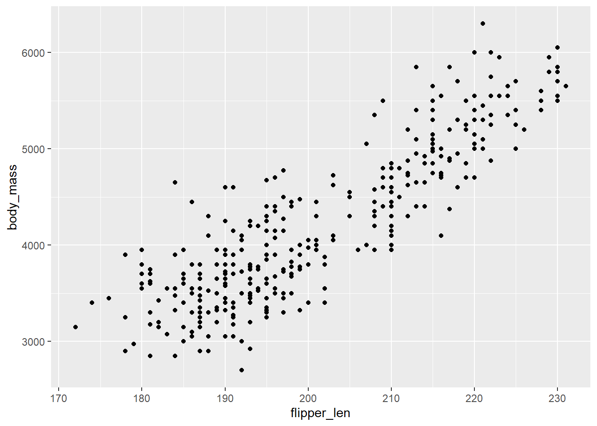

x = 5
class(x)[1] "numeric"Is it a logical (Boolean), string, etc?
Or use is….?
Binary Comparison, is it true or false?
Using variable a and b:
Floor will round down always.
Ceiling will round up always.
Square root √
Exponent
Assign multiple variables at once.
#Vectors Collection of elements, like a list.
Create consecutive numbers without writing them all out using the “:”.
Decreasing order
Creating data frames w = 2*z
Get the current working directory you are in.
Change your directory another location
There are different ways to look at the data frame to get familiar with what is in it.
To see a data frame use “View”
See the first few rows of the data frame.
species island bill_len bill_dep flipper_len body_mass sex year
1 Adelie Torgersen 39.1 18.7 181 3750 male 2007
2 Adelie Torgersen 39.5 17.4 186 3800 female 2007
3 Adelie Torgersen 40.3 18.0 195 3250 female 2007
4 Adelie Torgersen NA NA NA NA <NA> 2007
5 Adelie Torgersen 36.7 19.3 193 3450 female 2007
6 Adelie Torgersen 39.3 20.6 190 3650 male 2007'data.frame': 344 obs. of 8 variables:
$ species : Factor w/ 3 levels "Adelie","Chinstrap",..: 1 1 1 1 1 1 1 1 1 1 ...
$ island : Factor w/ 3 levels "Biscoe","Dream",..: 3 3 3 3 3 3 3 3 3 3 ...
$ bill_len : num 39.1 39.5 40.3 NA 36.7 39.3 38.9 39.2 34.1 42 ...
$ bill_dep : num 18.7 17.4 18 NA 19.3 20.6 17.8 19.6 18.1 20.2 ...
$ flipper_len: int 181 186 195 NA 193 190 181 195 193 190 ...
$ body_mass : int 3750 3800 3250 NA 3450 3650 3625 4675 3475 4250 ...
$ sex : Factor w/ 2 levels "female","male": 2 1 1 NA 1 2 1 2 NA NA ...
$ year : int 2007 2007 2007 2007 2007 2007 2007 2007 2007 2007 ...Summary will provide a summary of the rows, including NA rows.
species island bill_len bill_dep
Adelie :152 Biscoe :168 Min. :32.10 Min. :13.10
Chinstrap: 68 Dream :124 1st Qu.:39.23 1st Qu.:15.60
Gentoo :124 Torgersen: 52 Median :44.45 Median :17.30
Mean :43.92 Mean :17.15
3rd Qu.:48.50 3rd Qu.:18.70
Max. :59.60 Max. :21.50
NA's :2 NA's :2
flipper_len body_mass sex year
Min. :172.0 Min. :2700 female:165 Min. :2007
1st Qu.:190.0 1st Qu.:3550 male :168 1st Qu.:2007
Median :197.0 Median :4050 NA's : 11 Median :2008
Mean :200.9 Mean :4202 Mean :2008
3rd Qu.:213.0 3rd Qu.:4750 3rd Qu.:2009
Max. :231.0 Max. :6300 Max. :2009
NA's :2 NA's :2 Use “glimpse” to see the number of rows, columns, and each of the column names with their data type.
Check for NAs or not available/ missing values. Then determine what you will do with them. Will you get rid of them or insert a value? This only tells you yes and no there are NA values and how much but it wont tell you where those NAs are. However, summary above shows what columns they are in.x
Make sure to run the library for ggplot
── Attaching core tidyverse packages ──────────────────────── tidyverse 2.0.0 ──
✔ dplyr 1.1.4 ✔ readr 2.1.5
✔ forcats 1.0.0 ✔ stringr 1.5.1
✔ ggplot2 4.0.0 ✔ tibble 3.3.0
✔ lubridate 1.9.4 ✔ tidyr 1.3.1
✔ purrr 1.1.0
── Conflicts ────────────────────────────────────────── tidyverse_conflicts() ──
✖ dplyr::filter() masks stats::filter()
✖ dplyr::lag() masks stats::lag()
ℹ Use the conflicted package (<http://conflicted.r-lib.org/>) to force all conflicts to become errorsWarning: Removed 2 rows containing missing values or values outside the scale range
(`geom_point()`).